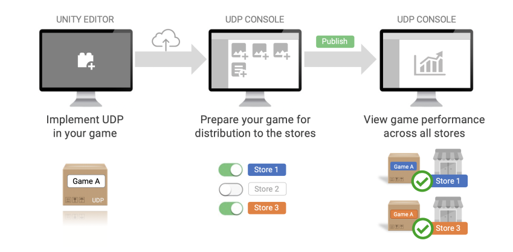

Unity 分发平台 (UDP) 让你可以通过单个中心将游戏分发到多个应用商店。UDP 使用每个商店的专用应用内购 (In-App Purchase) SDK 重新打包 Android 构建版本，从而使游戏与各个应用商店兼容。你可以从 UDP 控制台中管理你的所有商店提交内容。

UDP 概览
你可以使用 UDP 分发付费游戏和带有 IAP 的游戏。
UDP 控制台是基于 Web 的门户，你可以在其中准备游戏以便提交到多个应用商店。在 UDP 控制台中可以执行以下操作：
Learn more about the UDP console interface.
要使用 UDP，游戏必须具有 UDP 客户端，包括 UDP 客户端 ID。这样可以在 UDP 服务中标识游戏。在 UDP 上创建游戏时会生成该 ID，并且必须将该游戏链接到 Unity 项目。 要取消 Unity 项目与 UDP 客户端的链接，请在 UDP 控制台的“集成信息”部分中移除相应的 Unity 项目 ID。
UDP 包内有一个沙盒环境，用作 UDP 游戏的测试商店。在游戏中实现 UDP SDK 时，UDP 构建版本便可以将沙盒用作测试环境。必须先在沙盒中测试游戏，以便验证 UDP 和 IAP（如果适用）实现是否正常，然后才能将游戏提交到实际的商店。
沙盒测试可帮助确定在最初的 UDP 实现过程中出现的任何问题。未解决的问题可能会阻碍 UDP 为商店重新打包游戏，或导致 UDP 重新打包存在问题的游戏。这可能导致商店拒绝你的游戏或玩家无法完成交易。
应用内购 (IAP) 可让你从游戏内向玩家出售内容。你只需要通过 UDP 实现应用内购。然后，UDP 会自动将游戏重新打包到特定于商店的构建版本中。
在游戏客户端和服务器端都可以实现 UDP。对于离线游戏，你只需在游戏客户端中实现 UDP。对于在线游戏，还可以在服务器端实现 UDP。
了解如何：
UDP 仅支持消耗品和非消耗品类型的 IAP 商品。不支持订阅商品。
非消耗商品会产生永久性效果。玩家只能购买一次这种商品。
可消耗商品会产生暂时的效果，例如游戏币和额外的经验值。玩家可多次购买这种商品。
用户购买了可消耗商品后，必须先消耗，然后才能再次购买。通过消耗可以确保购买的商品已成功交付。
要消耗商品，游戏需要向 UDP SDK 发送一个 Consume 请求。在商品被消耗后，游戏应交付该商品。这样可以防止重复交付商品。
IAP 目录是游戏中实现的 IAP 商品库存。对于每个 IAP 商品，需要定义：
重新打包游戏并将其提交到商店后，UDP 会将你的 IAP 目录与商店的后端同步。然后，游戏可以从商店的后端查询 IAP 库存。
玩家购买 IAP 商品时，游戏会要求商店确认 IAP 目录。必须在游戏中正确实现 UDP，此步骤才能顺利进行。
UDP 控制台上的 IAP 目录是提交到商店后端系统的真实信息来源。
为了成功实现，请遵循 UDP 实现指南。为确保 IAP 正常运行，请在 UDP 沙盒环境中测试游戏。
你可以通过 UDP 将付费游戏（也称为付费下载游戏）分发到支持付费游戏的商店。随后，你可以在 UDP 控制台的“报告”控制面板中查看付费游戏的收入。
了解如何通过 UDP 分发付费游戏。
UDP 游戏属于某个 Unity 组织，而不属于任何个人用户。一个组织的所有用户都可以访问该组织的 UDP 游戏。权限因组织中具体用户的角色而异。
你还可以将不在组织中的用户添加到特定项目。应在 Unity Dashboard 中的 Project > Settings > Users 下添加用户。
你可以在 Unity 组织中将任务划分到 Unity 编辑器用户和非编辑器用户，例如：
获得项目访问权限的组织成员和个人都可以处理 Unity 项目。
与项目相关的权限决定了你可以在 Unity 编辑器中和 UDP 控制台中对于特定 Unity 项目访问哪些 UDP 功能。这适用于：
下表列出了 Unity 编辑器中的用户、管理员和所有者具有哪些与项目相关的 UDP 权限。对于项目级别和组织级别的权限，这些都是相同的。
| 用户 | 管理员 | 所有者 | |
|---|---|---|---|
| 生成新的 UDP 客户端 | 是 | 是 | 是 |
| 将 Unity 项目链接到 UDP 客户端 | 是 | 是 | 是 |
| 修改 UDP 设置 | 是 | 是 | 是 |
| 创建或修改 IAP | 是 | 是 | 是 |
下表列出了 UDP 控制台中的用户、管理员和所有者具有哪些与项目相关的 UDP 权限。对于项目级别和组织级别的权限，这些都是相同的。
| 用户 | 管理员 | 所有者 | |
|---|---|---|---|
| 生成新的 UDP 客户端 | 是 | 是 | 是 |
| 在游戏列表中存档游戏 | No | 是 | 是 |
| Delete a game in game list | No | 是 | 是 |
| Edit a game revision | 是 | 是 | 是 |
| 将 Unity 项目链接到 UDP 客户端 | 是 | 是 | 是 |
| 取消 Unity 项目与 UDP 客户端的链接 | No | 是 | 是 |
| 发布游戏修订版 | No | 是 | 是 |
| 将游戏注册到商店 | No | 是 | 是 |
| 将游戏发布到商店 | No | 是 | 是 |
| 高级页面操作 | No | 是 | 是 |
| “状态”页访问和操作 | No | 是 | 是 |
与组织相关的权限决定了你可以在组织中访问哪些 UDP 功能。这些功能通常仅限于组织成员，即，仅被授予对特定项目具有访问权限的个人不具有组织级别的权限。这一规则的例外情况如下：
下表列出了用户、管理员和所有者具有哪些与组织相关的额外权限。
| 项目级别 | 组织级别 | |||||
|---|---|---|---|---|---|---|
| 用户 | 管理员 | 所有者 | 用户 | 管理员 | 所有者 | |
| 查看“报告”控制面板 | No | No | 是 | No | 是 | 是 |
| 访问游戏列表 | 是* | 是* | 是* | 是 | 是 | 是 |
| 编辑公司简介 | No | No | No | No | 是 | 是 |
| 将组织注册到商店 | No | 是 | 是 | No | 是 | 是 |
注意：项目级别的用户可以访问拥有该项目的主体组织内的游戏，以及他们可以在自己的组织内访问的任何其他项目。